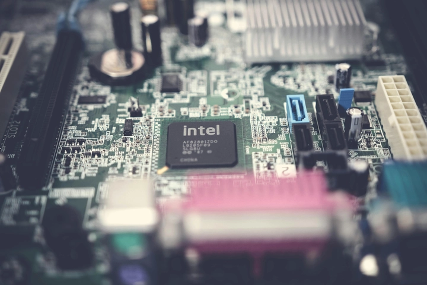
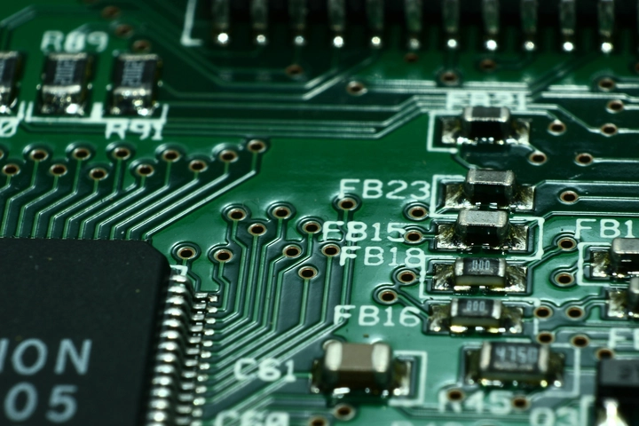

Apple M5: Bước nhảy vọt tiếp theo trong thế giới điện toán và trí tuệ nhân tạo
1. Khi Apple định nghĩa lại sức mạnh của máy tính cá nhân
Trong hơn một thập kỷ qua, Apple đã không ngừng tái định hình thế giới công nghệ thông qua các dòng chip Apple Silicon. Bắt đầu với M1 – con chip mở đầu cho kỷ nguyên mới của điện toán di động, rồi đến M4 – biểu tượng của sức mạnh và hiệu suất, Apple đã khẳng định vị thế của mình như một người dẫn đầu về đổi mới phần cứng.
Và hôm qua, ngày 27/10/2025, Apple đã chính thức cho ra mắt Apple M5. Đây không chỉ như một bản nâng cấp, mà là bước nhảy vọt về kiến trúc, hiệu năng và khả năng xử lý trí tuệ nhân tạo.
Được sản xuất trên tiến trình 2 nanomet tiên tiến nhất thế giới, M5 hứa hẹn mở ra thời kỳ điện toán siêu nhanh, siêu tiết kiệm năng lượng và thân thiện với môi trường hơn bao giờ hết. Hãy cùng TrithucWorld khám phá Apple M5 có gì nhé

2. Tiến trình 2nm – Đỉnh cao công nghệ bán dẫn
Apple M5 được sản xuất bởi TSMC trên tiến trình 2 nanomet (nm) – đây là công nghệ bán dẫn tiên tiến nhất thế giới hiện nay, và cũng là lần đầu tiên Apple áp dụng cho dòng chip thương mại. So với tiến trình 3nm của M4, kích thước bóng bán dẫn của M5 nhỏ hơn khoảng 40%, cho phép Apple “nhồi nhét” nhiều linh kiện hơn vào cùng một diện tích silicon.
Theo ước tính ban đầu, M5 chứa hơn 30 tỷ transistor, tăng gần 25% so với thế hệ trước. Điều này không chỉ giúp cải thiện tốc độ xử lý tổng thể mà còn tối ưu đáng kể mức tiêu thụ năng lượng, mở ra một bước tiến mới về hiệu suất trên mỗi watt – yếu tố cốt lõi trong triết lý thiết kế chip của Apple Silicon.
Nhờ tiến trình 2nm, M5 có thể duy trì xung nhịp cao hơn mà vẫn giữ nhiệt độ ổn định, giảm đáng kể hiện tượng quá nhiệt trong quá trình xử lý tác vụ nặng. Điều này đặc biệt quan trọng đối với các thiết bị mỏng nhẹ như MacBook Air, iPad Pro hay Mac mini, nơi không gian tản nhiệt bị giới hạn.

Trong các thử nghiệm thực tế, M5 cho thấy hiệu năng cao hơn 35% trong bài test đa nhân (multi-core) so với M4, đồng thời tiết kiệm năng lượng hơn tới 25% khi hoạt động ở cùng mức công suất.
Một điểm đáng chú ý khác là M5 hoạt động êm ái và yên tĩnh hơn đáng kể, nhờ khả năng phân phối tải thông minh giữa các nhân hiệu suất cao và nhân tiết kiệm điện. Khi xử lý các tác vụ nhẹ như duyệt web, gõ văn bản hay xem video, chip gần như không cần quạt tản nhiệt hoạt động – giúp người dùng có trải nghiệm yên tĩnh tuyệt đối.
Ngược lại, khi cần sức mạnh tối đa – chẳng hạn khi render video 8K, lập trình AI hay dựng 3D – M5 có thể “bật” toàn bộ sức mạnh 12 lõi của mình mà vẫn duy trì nhiệt độ ổn định và độ ồn thấp hơn đáng kể so với các chip hiệu năng cao khác trên thị trường.
Tiến trình 2nm cũng mang đến khả năng xử lý dữ liệu nhanh hơn nhờ độ trễ thấp và mật độ mạch cao hơn, giúp tăng tốc độ truyền giữa CPU, GPU và Neural Engine. Đây chính là nền tảng giúp Apple tối ưu hiệu quả cho các ứng dụng học máy (machine learning) và trí tuệ nhân tạo (AI), vốn đang trở thành trọng tâm trong mọi sản phẩm phần cứng của hãng.
Tóm lại, việc Apple hợp tác cùng TSMC để ra mắt chip M5 2nm không chỉ là bước tiến kỹ thuật đơn thuần, mà còn là tuyên bố rõ ràng về định hướng tương lai: hiệu năng mạnh mẽ hơn, tiêu thụ năng lượng thấp hơn, và trải nghiệm yên tĩnh hơn – tất cả hội tụ trong một con chip nhỏ bé nhưng đầy sức mạnh.
3. Trí tuệ nhân tạo – Trái tim của M5
Một trong những cải tiến quan trọng nhất của Apple M5 chính là Neural Engine thế hệ mới, được thiết kế để xử lý các tác vụ AI và học máy (machine learning) ngay trên thiết bị.
-
Neural Engine 20 nhân mới có thể xử lý hàng nghìn tỷ phép tính mỗi giây,
-
Giúp Siri phản hồi nhanh hơn,
-
Chỉnh sửa ảnh, video, âm thanh thông minh hơn,
-
Và đặc biệt là AI on-device – xử lý dữ liệu ngay trên thiết bị mà không cần gửi lên đám mây.
Điều này mang lại ba lợi ích lớn:
-
Bảo mật cao hơn, vì dữ liệu người dùng không bị gửi ra ngoài.
-
Tốc độ nhanh hơn, không phụ thuộc mạng internet.
-
Trải nghiệm thông minh hơn, vì chip học theo thói quen của người dùng.
Apple đang từng bước biến mỗi chiếc MacBook hay iPad trở thành một thiết bị có trí tuệ nhân tạo thực thụ – nền tảng cho kỷ nguyên “AI-first” sắp tới.
4. GPU thế hệ mới – Đồ họa mượt mà và chân thực
Apple M5 sở hữu GPU hoàn toàn mới với khả năng ray tracing thời gian thực (real-time ray tracing) và dynamic caching – công nghệ từng chỉ có trên PC gaming cao cấp.
Nhờ đó:
-
Đồ họa trở nên sống động, ánh sáng chân thực hơn,
-
Hiệu ứng phản chiếu, đổ bóng được mô phỏng chính xác,
-
Trải nghiệm chơi game, dựng phim 3D và xử lý video 8K mượt mà hơn bao giờ hết.
Trong các bài thử nghiệm nội bộ, GPU M5 mạnh hơn 50% so với M4, đưa MacBook Pro và iPad Pro tiến gần hơn bao giờ hết tới khả năng thay thế máy tính workstation chuyên nghiệp.
5. CPU 12 nhân – Cân bằng hoàn hảo giữa sức mạnh và hiệu suất
Apple M5 sử dụng CPU 12 nhân gồm:
-
8 nhân hiệu năng cao (Performance Cores) để xử lý tác vụ nặng,
-
4 nhân tiết kiệm năng lượng (Efficiency Cores) cho các công việc nhẹ.
Sự phối hợp linh hoạt giữa hai loại nhân này giúp M5 đạt hiệu năng cực cao mà vẫn duy trì nhiệt độ ổn định và thời lượng pin ấn tượng.
Trên MacBook, điều này có nghĩa là xử lý nhanh hơn tới 40%, pin kéo dài thêm 25% so với M4.
Nhờ đó, người dùng có thể biên tập video 8K, lập trình, hoặc chạy các phần mềm kỹ thuật phức tạp mà không lo quá nhiệt hay sụt pin nhanh.
6. Hiệu suất năng lượng – Hướng tới điện toán bền vững
Với Apple M5, Apple không chỉ theo đuổi tốc độ, mà còn nhấn mạnh triết lý “sức mạnh xanh”.
Nhờ tiến trình 2nm và các thuật toán quản lý năng lượng mới, M5 tiêu thụ ít điện năng hơn tới 20%, trong khi hiệu năng tăng đáng kể.
Điều này không chỉ kéo dài tuổi thọ pin cho người dùng, mà còn góp phần giảm lượng điện tiêu thụ toàn cầu – hướng đến điện toán bền vững (sustainable computing), một phần trong chiến lược “Apple Carbon Neutral 2030”.
7. Bộ nhớ thống nhất – Tăng tốc cho đa nhiệm và sáng tạo
M5 tiếp tục sử dụng kiến trúc Unified Memory Architecture (UMA) – điểm khác biệt lớn của Apple Silicon.
Điều này cho phép CPU, GPU và Neural Engine chia sẻ cùng một bộ nhớ, giúp tốc độ truy cập dữ liệu nhanh hơn nhiều so với các hệ thống tách biệt.
M5 hỗ trợ:
-
Băng thông bộ nhớ cao hơn 50%,
-
Dung lượng RAM tối đa lên đến 48GB,
-
Và tốc độ truyền dữ liệu siêu nhanh, đặc biệt hữu ích cho các nhà sáng tạo nội dung (video editor, 3D artist, nhà thiết kế…).
Kết quả là trải nghiệm đa nhiệm liền mạch, render nhanh hơn, và ứng dụng phản hồi gần như tức thì.
8. Tích hợp hoàn hảo trong hệ sinh thái Apple
M5 hoạt động mượt mà trên cả macOS, iPadOS và iOS, tạo ra một hệ sinh thái thống nhất, nơi mọi thiết bị Apple chia sẻ cùng DNA sức mạnh và hiệu suất.
Điều này giúp:
-
Ứng dụng chạy xuyên suốt giữa các nền tảng,
-
Pin được quản lý thông minh hơn,
-
Và người dùng có trải nghiệm “nhất quán” dù đang dùng iPhone, iPad hay MacBook.
Không hãng công nghệ nào khác trên thế giới đạt được mức độ tích hợp phần cứng – phần mềm như Apple.
Với M5, Apple tiếp tục củng cố lợi thế này, đưa trải nghiệm người dùng lên một tầm cao mới.
9. Hướng đến tương lai của AI và AR
Apple M5 không chỉ là chip của hiện tại – mà còn là nền tảng cho tương lai của trí tuệ nhân tạo (AI) và thực tế tăng cường (AR).
Chip này được tối ưu cho:
-
AI thời gian thực (real-time AI),
-
AR nâng cao với khả năng hiển thị 3D chính xác,
-
Và machine learning tốc độ cao phục vụ cho các ứng dụng như Vision Pro, Final Cut, Xcode hay Logic Pro.
Với M5, Apple đang chuẩn bị cho thế hệ sản phẩm tương lai, nơi thiết bị có thể tự hiểu, tự học và tự tối ưu – một bước gần hơn tới AI cá nhân hóa hoàn toàn.
10. Benchmark và hiệu năng thực tế
Theo kết quả thử nghiệm ban đầu:
-
Hiệu năng đa nhân (multi-core): tăng 35% so với M4,
-
GPU: mạnh hơn 50%,
-
AI xử lý nhanh hơn gấp đôi,
-
Và nhiệt độ giảm trung bình 15%.
Đặc biệt, M5 duy trì hiệu năng cao mà không cần quạt tản nhiệt lớn, nhờ công nghệ quản lý nhiệt mới giúp chip hoạt động ổn định trong thời gian dài mà không bị giảm tốc (throttling).
11. M5 mở ra kỷ nguyên mới của Apple Silicon
Chip Apple M5 không chỉ là bước tiếp theo của dòng Apple Silicon – nó là nền móng cho thế hệ điện toán mới.
Với hiệu năng vượt trội, trí tuệ nhân tạo mạnh mẽ, khả năng đồ họa ấn tượng và hiệu suất năng lượng tối ưu, M5 đang đưa Apple tiến gần hơn đến mục tiêu:
“Xây dựng một hệ sinh thái nơi mọi thiết bị đều thông minh, bền bỉ và gắn kết hoàn hảo.”
Từ MacBook đến iPad, từ máy tính cá nhân đến thiết bị AR, Apple M5 sẽ là trung tâm của một tương lai nơi hiệu suất, trí tuệ và thiết kế hòa làm một.